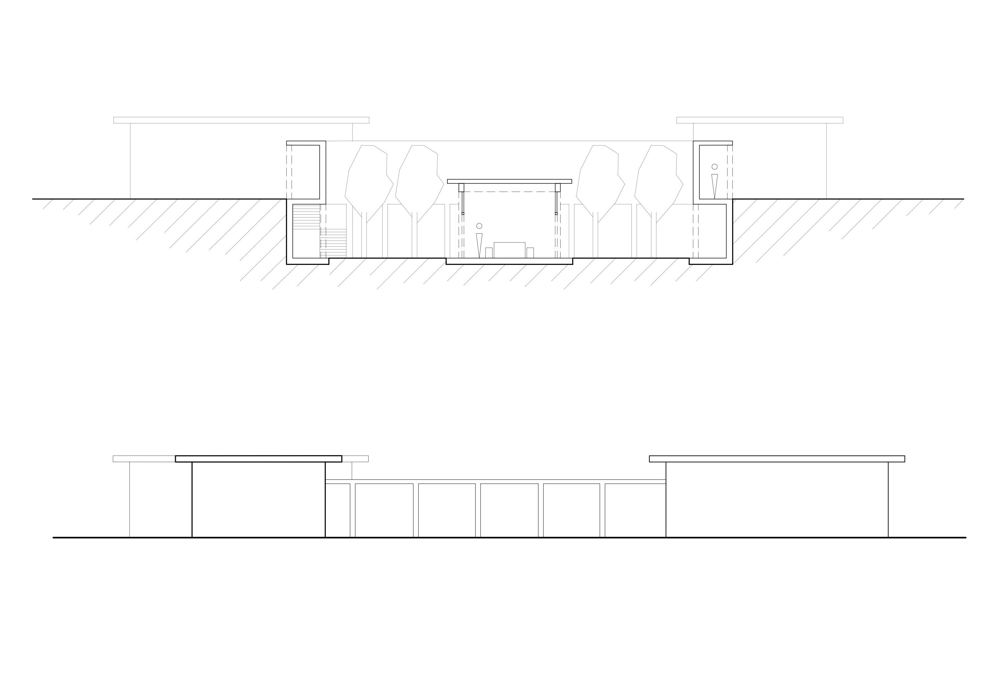
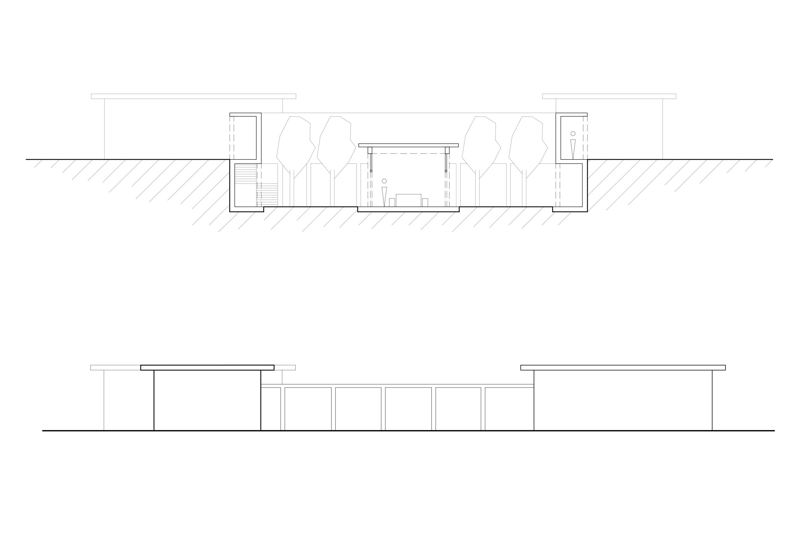

The concept behind the project is based on the dialectic of intro- and extroversion. This house is suitable for someone that works independently from others but enjoys social interactions during their free time.
The workplace is set in the center of a private garden, surrounded by covered walkways. This cloister-like garden creates a distraction-free space and allows for greater productivity and focus.
The living space, on the other hand, consists of four peripherally arranged spaces. These are connected by long corridors that serve the purpose of bringing more movement into everyday life. This is especially important in the case of a studio house, because the bringing together of living and working suggests that the inhabitant doesn’t need to leave the house very often and thus, would lack physical activity.
In order to emphasize the decoupling of working and living, both are located on two different floor levels. This separation strengthens the concept of introversion and extroversion even further.